1:Crie o banco de dados e a tabela abaixo:
2:Insira os registros abaixo na tabela T_CLIENTE:
1/2:RESULTADO
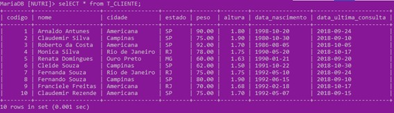
3:Selecione todos os registros:
3:RESULTADO
4:Selecione apenas as pessoas da cidade de Americana:
4:RESULTADO
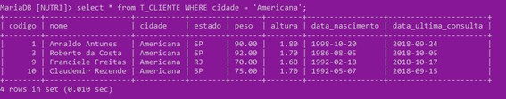
5:Selecione apenas as pessoas da cidade de Campinas:
5:RESULTADO
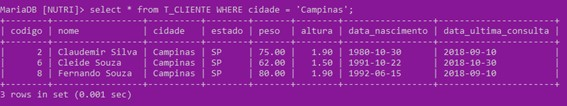
6:Selecione o registro da Renata Domingues:
6:RESULTADO
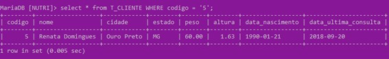
7:Selecione todos que pesam mais de 80 kg:
7:RESULTADO
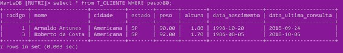
8:Selecione todos que medem menos de 1.7:
8:RESULTADO
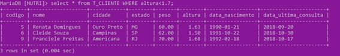
9:Selecione apenas quem nasceu em 07/05/1992:
9:RESULTADO
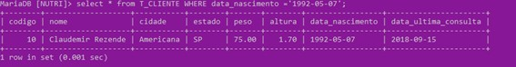
10 e 11:Selecione todos os registros, com exceção aos que são do estado SP:
10 e 11:RESULTADO
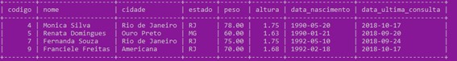
12:Selecione apenas as pessoas de AMERICANA -SP:
12:RESULTADO
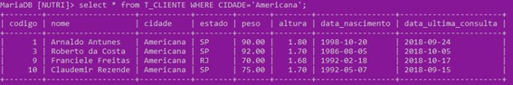
13:Selecione apenas as pessoas de Campinas ou do Rio de Janeiro:
13:RESULTADO
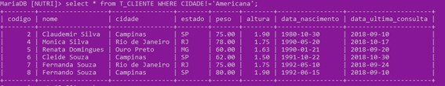
14:Selecione todos que tem mais de 80 kg e 1.8 de altura:
14:RESULTADO
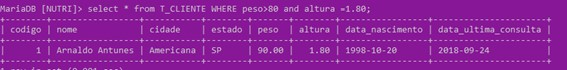
15:Selecione todos que tem mais de 80 kg e menos de 1.8 de altura:
15:RESULTADO
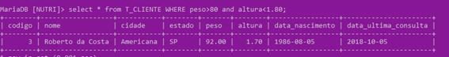
17:Apague:
17:RESULTADO
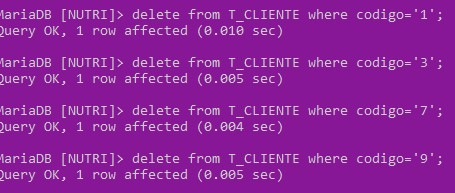
18:Crie as tabelas restantes.:
18:RESULTADO
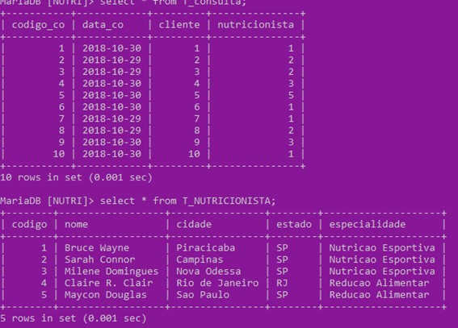
19:Selecione apenas as pessoas da cidade de Americana:
19:RESULTADO
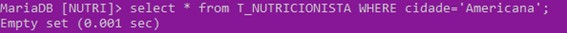
20:Selecione apenas as pessoas com especialidade Nutrição Esportiva:
20:RESULTADO
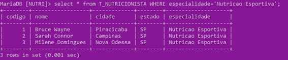
21:Selecione o registro do Maycon Douglas:
21:RESULTADO
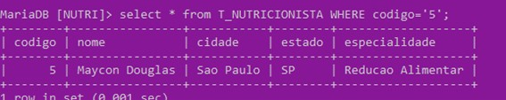
22:Selecione todas as pessoas que não são do estado de São Paulo:
22:RESULTADO
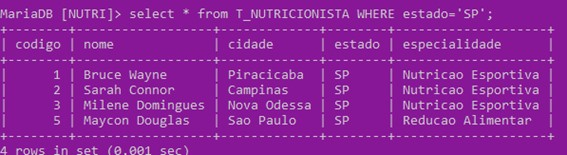
23:Corrija o nome do Maycon Douglas para Maicon Douglas:
23:RESULTADO
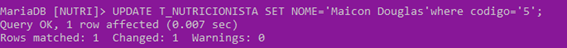
24:Altere Nutrição Esportiva para NE e Reeducação Alimentar para RA:
24:RESULTADO
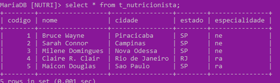
25:Altere os clientes que eram da Milene(3) para o Maicon(5):
25:RESULTADO
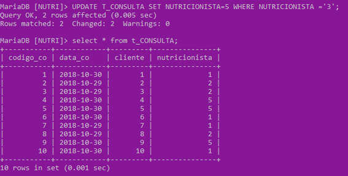